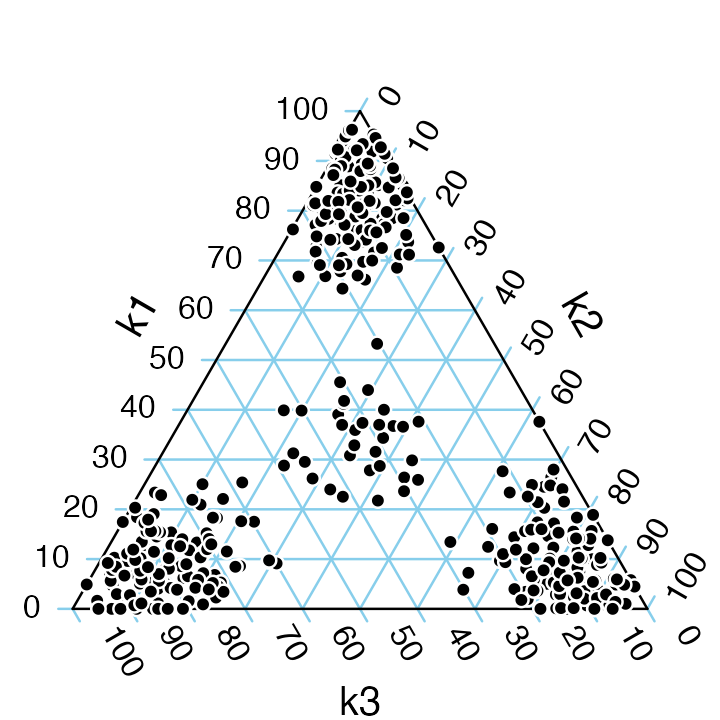
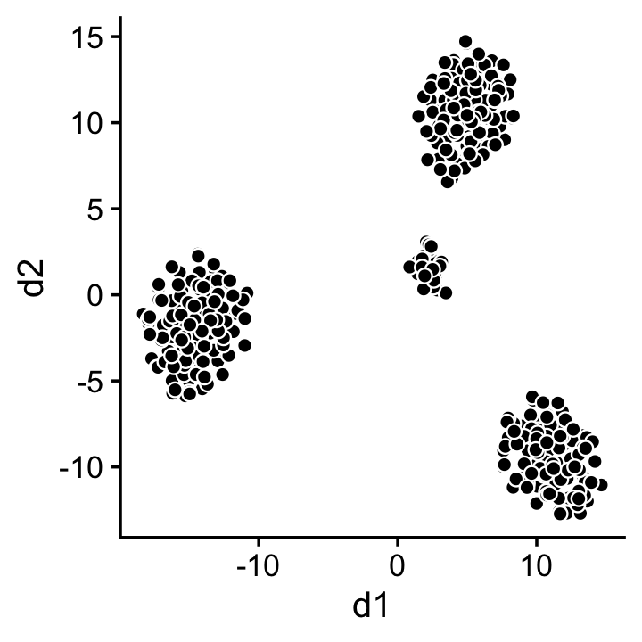
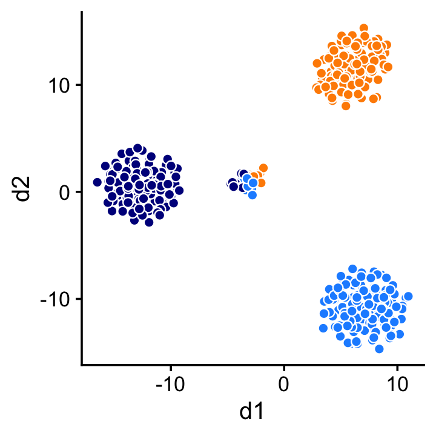
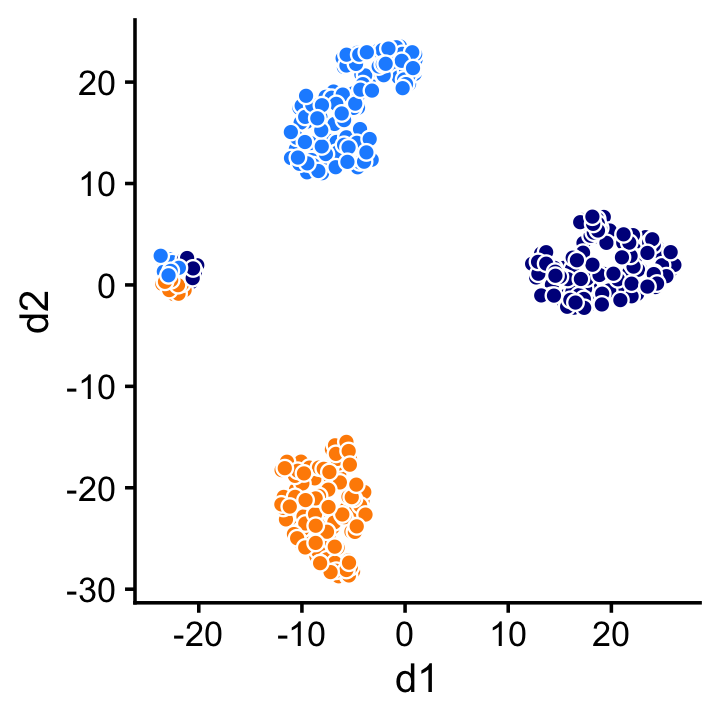
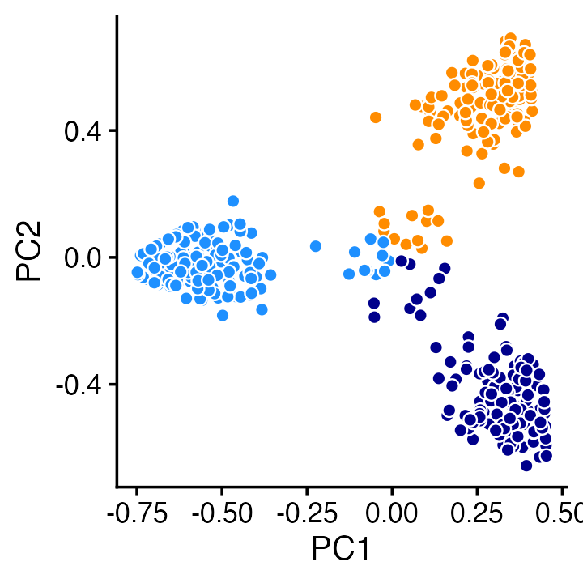

vignettes/topics_vs_clusters.Rmd
topics_vs_clusters.RmdClustering methods are widely used to discover interesting substructure in bulk or single-cell RNA sequencing (“RNA-seq”) data. An alternative is to use a topic model, which explains each sample (an expression profile) as a mixture of “gene programs” that are estimated from the data. In a topic modeling analysis, the gene expression programs are the topics.
In this short vignette, we show that a topic model picks up a very different kind of substructure that cannot be identified by (hard) clustering methods.
Simulate a “toy” gene expression data set from the multinomial topic model. Each sample—here, a vector of 400 counts—is generated as a mixture of three gene programs (the topics in the topic model). In particular, samples are mostly generated by either a single gene program or an approximately equal mixture of the three gene programs.
To illustrate a topic modeling analysis, we fit a multinomial topic model to these data,
fit <- fit_poisson_nmf(X,k = 3,numiter = 100,verbose = FALSE,
control = list(extrapolate = TRUE))
fit <- poisson2multinom(fit)then we plot the estimated topic proportions.
par(mar = c(0,0,0,0))
pdat <- as.data.frame(fit$L)
TernaryPlot(alab = "k1",blab = "k2",clab = "k3",grid.col = "skyblue",
grid.minor.lines = 0)
TernaryPoints(pdat,pch = 21,col = "white",bg = "black",cex = 0.8)
We observe in this plot that the estimated topic model recaptures the simulation: according to the model, samples are primarily explained by a single gene program, or by an approximately equal mixture of three gene programs.
To illustrate a clustering analysis, we use the t-SNE algorithm to project the samples onto a 2-d embedding.
tsne1 <- Rtsne(X,2,pca = FALSE,normalize = FALSE)
colnames(tsne1$Y) <- c("d1","d2")
ggplot(as.data.frame(tsne1$Y),aes(x = d1,y = d2)) +
geom_point(shape = 21,color = "white",fill = "black",size = 2) +
theme_cowplot(font_size = 12)
This 2-d projection immediately suggests four clusters. (In practice, one could automate the clustering of these data using a community detection method such as the Louvain algorithm, or by applying \(k\)-means to the \(t\)-SNE projection.)
Although the clustering is correct—there are indeed four clusters—it fails to reveal any insight into the relationship between these clusters. In particular, the distribution of genes in the middle cluster is an equal mixture of the gene distributions in the other clusters. This is a limitation of any clustering method that does not allow for partial membership to clusters.
To further understand this point, we label each sample by the topic with the highest estimated weight:
kmax <- factor(apply(fit$L,1,which.max))
ggplot(cbind(tsne1$Y,data.frame(kmax)),aes(x = d1,y = d2,fill = kmax)) +
geom_point(shape = 21,color = "white",size = 2,show.legend = FALSE) +
scale_fill_manual(values = c("dodgerblue","darkorange","darkblue")) +
theme_cowplot(font_size = 12)
In general, a clustering will align closely with the topic modeling whenever the samples can be largely explained by a single topic or gene program. Outside this setting, topic modeling and clustering can reveal very different sorts of substructure, so a topic modeling analysis should not be expected to recapture the results of a clustering analysis, and vice versa.
Despite this limitation of the clustering methods, it can nonetheless be useful to identify the clusters exhibiting markedly different gene expression patterns. This can also be done within a topic modeling analysis: the topic model contains enough information to identify these clusters, at least in the artificial setting where the data are simulated from a topic model.
For example, a 2-d t-SNE projection of the topic proportions reveals the same four clusters:
tsne2 <- Rtsne(fit$L,2,pca = FALSE,normalize = FALSE)
colnames(tsne2$Y) <- c("d1","d2")
ggplot(cbind(tsne2$Y,data.frame(kmax)),aes(x = d1,y = d2,fill = kmax)) +
geom_point(shape = 21,color = "white",size = 2,show.legend = FALSE) +
scale_fill_manual(values = c("dodgerblue","darkorange","darkblue")) +
theme_cowplot(font_size = 12)
Or we can achieve a similar result using PCA:
pca <- prcomp(fit$L,center = TRUE,scale = FALSE)
ggplot(cbind(pca$x,data.frame(kmax)),aes(x = PC1,y = PC2,fill = kmax)) +
geom_point(shape = 21,color = "white",size = 2,show.legend = FALSE) +
scale_fill_manual(values = c("dodgerblue","darkorange","darkblue")) +
theme_cowplot(font_size = 12)
In short, the topic modeling analysis retains the benefits of the clustering analysis, while revealing additional substructure that cannot be identified by standard clustering methods.